Arsenic Exposure and Cancer Risk from Groundwater and Rice
This is Capstone 2 of the geostatistics module (Part 9). Capstone 1 mapped the probability that a well exceeds a limit at the national scale. This notebook goes one step further: it carries the spatial uncertainty of two exposure media through an intake model to a lifetime cancer risk.
Dataset: 263 paired samples of irrigation-well water, soil and rice grain from farmers’ fields in Tala Upazila, Satkhira district (Data/00_shared/data_geostatistics/Arsenic - Tala/water_soil_rice_arsenic_data.csv), a 100 m grid with covariates (tala_grid.csv) and the 12 union boundaries with population (tala_union.shp, tala_union_centriod.dbf).
Targets: Arsenic in groundwater (WAs, µg/L) and in rice grain (GAs, µg/kg)
Library:geolattice.geostatistics
Overview
Where, and with what certainty, does arsenic intake from drinking water and from rice exceed a tolerable level, and what lifetime cancer risk follows?
Kriging gives one smooth map and a variance for each node. A risk calculation needs more: the whole distribution of possible values at every node, and maps that keep the real short-range variability. Sequential indicator simulation (SIS) provides both. It generates many equally probable maps, and any calculation applied to each map in turn (intake, cancer risk, area above a limit) inherits the spatial uncertainty.
Objectives
Objective
Question
Sections
1. Describe the data
How are WAs and GAs distributed, and do they share a spatial pattern?
1 and 2
2. Model spatial continuity
How does spatial continuity change across nine thresholds of WAs?
3
3. Simulate groundwater arsenic
What do 100 equally probable maps of WAs look like?
4
4. Use secondary information for rice
Can WAs, phosphate-extractable soil As and oxalate-extractable Fe inform GAs through a proportional odds model?
5 and 6
5. Simulate grain arsenic
SIS with local prior means for GAs
7
6. Check the simulations
Do the realizations reproduce the data, the histogram and the variogram?
8 and 9
7. Map intake
Where does inorganic As intake exceed the tolerable daily intake, and how many people live there?
10
8. Map cancer risk
What are the median and 95th percentile lifetime cancer risks by union?
11
Workflow
WAs data ── indicator variograms (9 thresholds) ── SIS (sisim) ───────────────┐
├─ intake ─ P(intake >= MTDI) ─ population at risk
GAs data ─┬ proportional odds model (WAs, PAs, AoFe) ─ prior probabilities ─┐ │ └ cancer risk ─ median and 95th percentile
└ residual indicator variograms ── SIS with local prior means ────┴─┘
API overview
- geopandas -> union boundaries, node-to-union assignment
- fit_indicator_variogram -> indicator variograms of WAs at nine thresholds
- IndicatorKriging -> cross-validation of WAs
- sisim -> sequential indicator simulation of WAs
- scipy.optimize.minimize -> proportional odds (ordered logistic) model, variogram fitting
- sis_local_means / sklm_cdf -> SIS with local prior means for GAs
- numpy random generator -> Monte Carlo draws of water and rice intake
geolattice.geostatistics.sisim uses one global distribution as the prior at every node. Grain arsenic needs a prior that changes from node to node (simple kriging with local prior means). That method is provided by geolattice.geostatistics.sis_local_means and sklm_cdf.
Setup
Installation. This notebook needs installation option 4 (core, spatial analysis, spatial statistics and geostatistics): pip install "geolattice[geostats]". See “Installation options” in the GeoLattice README.
Code
%matplotlib inlineimport sys, time, warningswarnings.filterwarnings("ignore")# Keep TensorFlow out of this process (optional regression-kriging backends).sys.modules.setdefault("tensorflow", None)# Scientific stack and the indicator-kriging and simulation routines used below.from pathlib import Pathimport numpy as npimport pandas as pdimport geopandas as gpdimport matplotlib.pyplot as pltfrom scipy.optimize import minimizefrom scipy.spatial import cKDTreefrom scipy.spatial.distance import pdistfrom scipy.special import expitfrom sklearn.model_selection import KFoldimport geolattice.geostatistics as gstatfrom geolattice.geostatistics import IndicatorKriging, fit_indicator_variogram, sisim, sis_local_means, sklm_cdf, order_relationsfrom geolattice.geostatistics.utils.backend import cupy_gpu_usableplt.rcParams["figure.dpi"] =100plt.rcParams["axes.grid"] =Trueplt.rcParams["grid.alpha"] =0.3pd.set_option("display.max_colwidth", None)SEED =42# Use the GPU when CuPy can run a real kernel on this machine.USE_GPU = cupy_gpu_usable()print("geolattice.geostatistics :", gstat.__version__)print("Backend :", "GPU (CuPy)"if USE_GPU else"CPU (NumPy)")# ---- Simulation settings -------------------------------------------------------------# Defaults keep the run time practical on a CPU. Raise N_SIM and lower GRID_STEP for denser runs.N_SIM =100# number of realizationsGRID_STEP =500# m, simulation grid spacing (the supplied grid is 100 m)# ---- Exposure and risk parameters (exposure and risk parameters) ---------BODY_WEIGHT =60.0# kgBIOAVAIL_WATER =1.00# bioavailability of inorganic As in waterBIOAVAIL_RICE =0.90# bioavailability of inorganic As in riceMTDI =2.1# µg As / kg body weight / dayWATER_LOGN_MU, WATER_LOGN_SIGMA =1.193, 0.21# water intake (L/day), log-normalRICE_CAUCHY_LOC, RICE_CAUCHY_SCALE =0.4609, 0.0299# rice intake (kg dry weight/day), CauchyRICE_MIN, RICE_MAX =0.33, 0.78# range of the published rice intakesIAS_INTERCEPT, IAS_SLOPE =19.6, 0.67# inorganic As = 19.6 + 0.67 * total grain As (µg/kg)ED, EF, AT =28.0, 350.0, 70.0*365.0# exposure duration (yr), frequency (d/yr), averaging time (d)CPS =1.5# cancer potency slope, (mg/kg/day)^-1# Acceptable lifetime risk of 1 in 10,000, drawn as a reference line on the risk plots.RISK_ACCEPTABLE =1.0e-4
Each of the 263 records is one farmer’s field with a shallow tube well (STW). The file stores WAs in mg/L and grain As in mg/kg. They are converted to µg/L and µg/kg, µg/L and µg/kg. Two soil variables are used later as covariates for rice: phosphate-extractable As (PAs, mg/kg) and oxalate-extractable Fe (AoFe, converted from mg/kg to %).
Code
# Walk up from the working directory until the Tala water, soil, and rice table is found.ROOT = Path.cwd().resolve()whilenot (ROOT /"Data"/"00_shared"/"data_geostatistics"/"Arsenic - Tala"/"water_soil_rice_arsenic_data.csv").is_file():if ROOT.parent == ROOT:raiseFileNotFoundError("Could not find Data/00_shared/data_geostatistics/Arsenic - Tala/water_soil_rice_arsenic_data.csv. ""Run this notebook from the GeoLattice repository." ) ROOT = ROOT.parentDATA_DIR = ROOT /"Data"/"00_shared"/"data_geostatistics"/"Arsenic - Tala"# Paired field samples, converted into the units used for intake and risk.raw = pd.read_csv(DATA_DIR /"water_soil_rice_arsenic_data.csv")# Water and grain arsenic move to µg/L and µg/kg. Phosphate arsenic and oxalate iron keep their published units.df = pd.DataFrame({"x": raw["x"], "y": raw["y"],"WAs": raw["WAs"] *1000.0, # µg/L"GAs": raw["Grain_As"] *1000.0, # µg/kg"PAs": raw["SPAs"], # mg/kg"AoFe": raw["SAoFe"] /1.0e4, # %"year": raw["YEAR"], "variety": raw["Variety"], "land_type": raw["Land_type"],})# Point coordinates for the variograms and the simulations.xy = df[["x", "y"]].to_numpy(float)was = df["WAs"].to_numpy(float)gas = df["GAs"].to_numpy(float)# Union polygons, names, and population, joined so later results can be summarised by union.unions = gpd.read_file(DATA_DIR /"tala_union.shp")[["UNIONNAME", "UID", "geometry"]]pop = gpd.read_file(DATA_DIR /"tala_union_centriod.dbf")[["UNIONNAME", "Population"]]unions = unions.merge(pd.DataFrame(pop), on="UNIONNAME").sort_values("UNIONNAME").reset_index(drop=True)unions["Union"] = unions["UNIONNAME"].str.title()unions["area_km2"] = unions.area /1.0e6print(f"Fields: {len(df)} duplicated locations: {df.duplicated(['x', 'y']).sum()}")print(f"Unions: {len(unions)} area: {unions['area_km2'].sum():.0f} km² population in the union file: {unions['Population'].sum():,}")print(f"Coordinate system: {unions.crs.name}")display(df[["WAs", "GAs", "PAs", "AoFe"]].describe().T.round(2))
Fields: 263 duplicated locations: 0
Unions: 12 area: 342 km² population in the union file: 221,219
Coordinate system: Everest_Bangladesh_Lambert_Conformal_Conic
count
mean
std
min
25%
50%
75%
max
WAs
263.0
129.88
79.24
11.00
74.50
119.00
175.00
458.00
GAs
263.0
325.74
120.03
94.00
245.00
313.00
385.00
845.00
PAs
263.0
4.41
2.24
0.78
2.88
4.06
5.60
14.80
AoFe
263.0
0.26
0.06
0.10
0.23
0.26
0.28
0.49
Code
# Simulation grid: every GRID_STEP-th node of the supplied 100 m grid, with its covariatesgrid_full = pd.read_csv(DATA_DIR /"tala_grid.csv")gx0, gy0 = grid_full["x"].min(), grid_full["y"].min()keep = (np.round(grid_full["x"] - gx0) % GRID_STEP ==0) & (np.round(grid_full["y"] - gy0) % GRID_STEP ==0)grid = grid_full[keep].reset_index(drop=True).rename(columns={"was": "WAs", "pas": "PAs", "aofe": "AoFe"})gxy = grid[["x", "y"]].to_numpy(float)CELL_KM2 = (GRID_STEP /1000.0) **2# Union of each node (nodes on the edge are given to the nearest union)gpts = gpd.GeoDataFrame(grid[["x", "y"]], geometry=gpd.points_from_xy(grid["x"], grid["y"]), crs=unions.crs)joined = gpd.sjoin_nearest(gpts, unions[["Union", "geometry"]], how="left")grid["Union"] = joined[~joined.index.duplicated()]["Union"].to_numpy()print(f"Supplied grid: {len(grid_full):,} nodes at 100 m simulation grid: {len(grid):,} nodes at {GRID_STEP} m ({len(grid) * CELL_KM2:.0f} km²)")print("Grid covariates: WAs (µg/L), PAs (mg/kg), AoFe (%)")# Plot helpers: maps are drawn without axis ticks, # Column and row of each node on the regular simulation grid.gx_u = np.sort(grid["x"].unique())gy_u = np.sort(grid["y"].unique())g_col = np.searchsorted(gx_u, grid["x"].to_numpy())g_row = np.searchsorted(gy_u, grid["y"].to_numpy())# Union outlines, with names at an interior point when a map needs labels.def base_map(ax, title=None, labels=False): unions.boundary.plot(ax=ax, color="k", linewidth=0.5)if labels:for _, r in unions.iterrows(): p = r.geometry.representative_point() ax.annotate(r["Union"], (p.x, p.y), ha="center", va="center", fontsize=6.5) ax.set_aspect("equal") ax.set_xticks([]); ax.set_yticks([]) ax.set_xlabel(""); ax.set_ylabel("") ax.grid(False)if title: ax.set_title(title, fontsize=10)# Node values as a raster, with the union boundaries and a colour bar.def plot_grid(ax, values, title, cmap="Spectral_r", vmin=None, vmax=None, label=""): r = np.full((len(gy_u), len(gx_u)), np.nan) r[g_row, g_col] = values im = ax.pcolormesh(gx_u, gy_u, r, cmap=cmap, vmin=vmin, vmax=vmax, shading="nearest") base_map(ax, title) plt.colorbar(im, ax=ax, label=label, fraction=0.046, pad=0.03)return im
Supplied grid: 34,254 nodes at 100 m simulation grid: 1,369 nodes at 500 m (342 km²)
Grid covariates: WAs (µg/L), PAs (mg/kg), AoFe (%)
Exploratory analysis
Quartile maps and histograms of both variables are shown below, with the correlation between the two media and the covariates.
Code
# Quartile maps and histograms of groundwater arsenic and grain arsenic.fig, axes = plt.subplots(2, 2, figsize=(12, 10))# Quartile edges run from the sample minimum to the sample maximum, so the legend shows the observed range.QCOLORS = ["#2b83ba", "#abdda4", "#fdae61", "#d7191c"]for i, (name, v, unit) inenumerate([("WAs", was, "µg/L"), ("GAs", gas, "µg/kg")]): q = np.quantile(v, [0.25, 0.5, 0.75]) cls = np.digitize(v, q) edges = np.r_[v.min(), q, v.max()]for k inrange(4): m = cls == k axes[i, 0].scatter(xy[m, 0], xy[m, 1], s=16, c=QCOLORS[k], edgecolors="k", linewidths=0.2, label=f"{edges[k]:.0f} to {edges[k +1]:.0f}") base_map(axes[i, 0], f"{name}: quartile map ({unit})", labels=(i ==0)) axes[i, 0].legend(fontsize=8, loc="lower left", title=unit, title_fontsize=8) axes[i, 1].hist(v, bins=25, color="steelblue", edgecolor="white") axes[i, 1].axvline(v.mean(), color="crimson", ls="--", label=f"mean = {v.mean():.0f}") axes[i, 1].axvline(np.median(v), color="darkorange", ls=":", label=f"median = {np.median(v):.0f}") axes[i, 1].set_title(f"{name}: histogram", fontsize=10) axes[i, 1].set_xlabel(f"{name} ({unit})") axes[i, 1].set_ylabel("Number of fields") axes[i, 1].legend()plt.tight_layout()plt.show()# Sample moments, the share of wells above 50 µg/L, and the correlation with the soil covariates.summary = df[["WAs", "GAs"]].agg(["min", "median", "mean", "max", "std", "skew"]).Tsummary["pct_above_50_ug_L"] = [100* (was >50).mean(), np.nan]display(summary.round(2))print("Pearson correlation:")display(df[["WAs", "GAs", "PAs", "AoFe"]].corr().round(2))
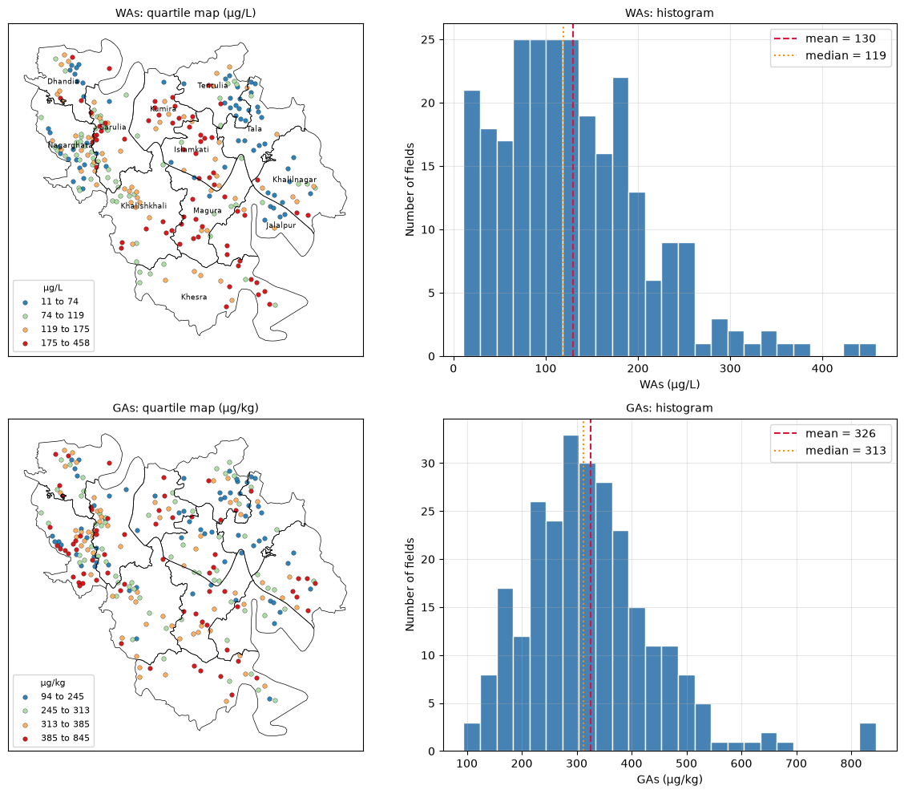
min
median
mean
max
std
skew
pct_above_50_ug_L
WAs
11.0
119.0
129.88
458.0
79.24
0.98
84.41
GAs
94.0
313.0
325.74
845.0
120.03
1.12
NaN
Pearson correlation:
WAs
GAs
PAs
AoFe
WAs
1.00
0.33
0.28
-0.10
GAs
0.33
1.00
0.31
-0.22
PAs
0.28
0.31
1.00
-0.08
AoFe
-0.10
-0.22
-0.08
1.00
Reading the results. WAs ranges from 11 to 458 µg/L with a median of 119 µg/L, and 84% of the wells exceed the Bangladesh standard of 50 µg/L. GAs ranges from 94 to 845 µg/kg with a mean of 326 µg/kg. Both distributions are positively skewed (skewness 0.98 and 1.12).
The two media are only weakly related (r = 0.33). The quartile maps show one shared feature: the north-east (Tala union) is low in WAs. Elsewhere the patterns differ, and GAs changes over much shorter distances than WAs. GAs is as closely related to phosphate-extractable soil As (r = 0.31) as to WAs, and it decreases with oxalate-extractable Fe (r = -0.22). These three variables are the covariates of Section 5.
Indicator variograms of groundwater arsenic
SIS needs the cumulative distribution of WAs at every node. It is built from nine thresholds, the deciles of the data. For each threshold \(z_k\) the data are coded as \(i(\mathbf{u}; z_k) = 1\) if \(\text{WAs} \le z_k\) and 0 otherwise, and a variogram is computed and modeled.
Each variogram is rescaled by the variance of its indicator, so the sill is close to 1 and the nugget can be read directly as a share of the variance. Each threshold receives a nugget plus one spherical or exponential structure, chosen by weighted least squares. The range is the effective range, at which the model reaches 95% (exponential) or 100% (spherical) of the sill. One structure per threshold keeps the fit automatic.
Code
# Nine decile thresholds. Indicators use CDF coding, and the variograms are divided by the indicator variance.QUANTILES = np.round(np.arange(0.1, 1.0, 0.1), 1)THR_W = np.quantile(was, QUANTILES)THR_G = np.quantile(gas, QUANTILES)K =len(QUANTILES)MAXLAG, N_LAGS =9000.0, 15# Spherical and exponential structures, both written so that a is the effective range.def spherical(h, a): hr = np.minimum(np.asarray(h, float) / a, 1.0)return1.5* hr -0.5* hr **3def exponential(h, a):return1.0- np.exp(-3.0* np.asarray(h, float) / a)STRUCTURES = {"spherical": spherical, "exponential": exponential}# Pair distances out to 9 km. Lags with fewer than 30 pairs are dropped.def experimental_variogram(coords, values, maxlag=MAXLAG, n_lags=N_LAGS, min_pairs=30): d = pdist(coords) sq =0.5* pdist(np.asarray(values, float)[:, None]) **2 b = np.digitize(d, np.linspace(0, maxlag, n_lags +1)) -1 ok = [k for k inrange(n_lags) if np.sum(b == k) >= min_pairs]return (np.array([d[b == k].mean() for k in ok]), np.array([sq[b == k].mean() for k in ok]), np.array([np.sum(b == k) for k in ok]))def fit_standardized_model(lag, gamma_std, n_pairs):# Nugget + one structure fitted to a variogram that has been divided by the variance.# Weights are N(h) / h^2. The range is fitted in km so that parameters have a similar scale. w = n_pairs / lag **2 w = w / w.sum() best =Nonefor name, f in STRUCTURES.items():for a0 in (1.0, 3.0, 6.0): loss =lambda q: np.sum(w * (q[0] + q[1] * f(lag, 1000.0* q[2]) - gamma_std) **2) res = minimize(loss, x0=[0.5, 0.5, a0], bounds=[(0.0, 1.2), (1e-3, 1.5), (0.4, 20.0)], method="L-BFGS-B")if best isNoneor res.fun < best[0]: best = (res.fun, name, res.x) _, name, q = bestreturn {"model": name, "nugget": float(q[0]), "psill": float(q[1]), "range": float(1000.0* q[2])}# Fitted standardised model evaluated at distance h.def model_curve(m, h):return m["nugget"] + m["psill"] * STRUCTURES[m["model"]](h, m["range"])# Structure, nugget, relative structured variance, and effective range at each threshold.def variogram_table(thresholds, models):return pd.DataFrame([{"threshold": t, "cdf": q, "model": m["model"], "nugget": m["nugget"], "partial_sill": m["psill"],"Q": m["psill"] / (m["nugget"] + m["psill"]), "effective_range_m": m["range"]}for t, q, m inzip(thresholds, QUANTILES, models)])# Experimental points and the fitted curve, one panel per decile.def plot_variograms(emp, models, thresholds, unit, suptitle): fig, axes = plt.subplots(3, 3, figsize=(13, 10.5), sharey=True) h = np.linspace(1, MAXLAG, 200)for ax, (lag, g), m, t inzip(axes.flat, emp, models, thresholds): ax.plot(lag, g, "o", mfc="none", color="k") ax.plot(h, model_curve(m, h), "k:") ax.set_ylim(0, 1.5) ax.set_title(rf"$Z_k \leq${t:.1f}{unit}", fontsize=10)for ax in axes[-1]: ax.set_xlabel("Distance (m)")for ax in axes[:, 0]: ax.set_ylabel("Semivariance (rescaled)") fig.suptitle(suptitle, y=1.0) plt.tight_layout() plt.show()# Standardised indicator variograms of groundwater arsenic at the nine deciles.ind_w = (was[:, None] <= THR_W[None, :]).astype(float) # hard indicators, cdf codingcdf_w = ind_w.mean(axis=0)emp_w, models_w = [], []for k inrange(K): lag, gamma = fit_indicator_variogram(xy, was, threshold=THR_W[k], maxlag=MAXLAG, n_lags=N_LAGS) _, _, n_pairs = experimental_variogram(xy, ind_w[:, k], min_pairs=1) g_std = gamma / ind_w[:, k].var() emp_w.append((lag, g_std)) models_w.append(fit_standardized_model(lag, g_std, n_pairs))display(variogram_table(THR_W, models_w).round(3))plot_variograms(emp_w, models_w, THR_W, "µg As/L", "Indicator variograms of groundwater arsenic")
threshold
cdf
model
nugget
partial_sill
Q
effective_range_m
0
35.0
0.1
exponential
0.228
0.612
0.729
4066.938
1
60.8
0.2
spherical
0.544
0.329
0.377
3537.936
2
81.6
0.3
spherical
0.433
0.505
0.539
2240.002
3
99.8
0.4
spherical
0.661
0.309
0.319
3033.625
4
119.0
0.5
exponential
0.620
0.434
0.412
7118.343
5
137.4
0.6
exponential
0.484
0.627
0.565
8138.504
6
166.0
0.7
spherical
0.581
1.065
0.647
18903.142
7
185.2
0.8
spherical
0.606
0.670
0.525
11535.300
8
231.8
0.9
spherical
0.611
0.792
0.565
20000.000
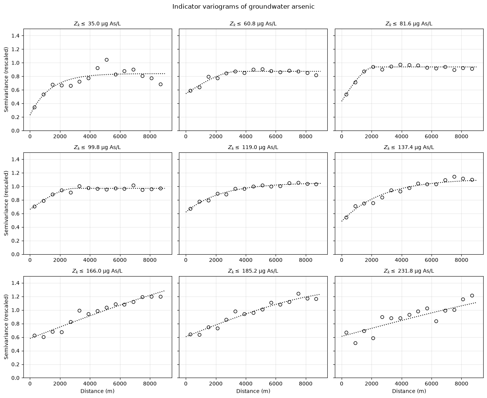
Reading the results.
Low thresholds (first four deciles) reach a sill within 2 to 4 km. The nugget takes 27% to 68% of the sill.
Middle thresholds (0.5 and 0.6 quantiles) have effective ranges of 7 to 8 km.
High thresholds (0.7 to 0.9 quantiles) are still rising at 9 km, the longest lag computed. The fitted ranges of 11 to 20 km lie beyond the data extent, and the value at the 0.9 quantile is the upper bound of the fit. They should be read as “no sill within the study area”, which reflects the regional gradient of high WAs from the north-west to the south-east.
High concentrations therefore form larger connected zones than low concentrations. Indicator methods can represent this difference. A single variogram of WAs cannot. The ratio Q of partial sill to sill is between 0.32 and 0.73, a moderate to strong spatial structure.
Cross-validation of indicator kriging for WAs
Before simulating, the indicator models are checked by 10-fold cross-validation. Indicator kriging returns the local distribution at each held-out well. Its mean, the E-type estimate, is compared with the measured value. The E-type is computed as \(\sum_j \big[F(z_{j+1}) - F(z_j)\big]\,\bar z_j\), where \(\bar z_j\) is the mean of the data in class \(j\).
Code
# order_relations is imported from geolattice.geostatistics# Mean concentration in each class between consecutive thresholds, including the two tails.def class_means(values, thresholds): cls = np.searchsorted(thresholds, values, side="left")return np.array([values[cls == j].mean() for j inrange(len(thresholds) +1)])# E-type estimate: class probabilities taken from the CDF, multiplied by the class means.def etype_from_cdf(F, cmeans): pmf = np.diff(np.concatenate([np.zeros(F.shape[:-1] + (1,)), F, np.ones(F.shape[:-1] + (1,))], axis=-1), axis=-1)return pmf @ cmeans# R-squared, RMSE, and bias of a cross-validated estimate against the measured values.def cv_scores(obs, pred):return {"R2": float(np.corrcoef(obs, pred)[0, 1] **2), "RMSE": float(np.sqrt(np.mean((obs - pred) **2))),"bias": float(np.mean(pred - obs))}# IndicatorKriging takes (nugget, partial sill, range) in indicator units and returns P(Z >= z_k)ik_params_w = {float(t): (m["nugget"] * ind_w[:, k].var(), m["psill"] * ind_w[:, k].var(), m["range"])for k, (t, m) inenumerate(zip(THR_W, models_w))}ik_model_name = pd.Series([m["model"] for m in models_w]).mode()[0]# Ten folds. Each test fold is turned from exceedance probabilities into an E-type estimate.folds =list(KFold(n_splits=10, shuffle=True, random_state=SEED).split(xy))cv_w = np.full(len(was), np.nan)for tr, te in folds: ik = IndicatorKriging(cov_model=ik_model_name, max_neighbors=16, use_gpu=USE_GPU).fit(xy[tr], was[tr]) pr = ik.predict(xy[te], [float(t) for t in THR_W], ik_params_w)# P(Z >= z_k) and P(Z <= z_k) are complementary here because no datum equals a threshold exactly F = order_relations(1.0- np.column_stack([np.asarray(pr[float(t)], float) for t in THR_W])) cv_w[te] = etype_from_cdf(F, class_means(was[tr], THR_W))cv_w_scores = cv_scores(was, cv_w)print(f"Most frequent structure, used for IndicatorKriging: {ik_model_name}")print("WAs, indicator kriging E-type, 10-fold CV:", {k: round(v, 2) for k, v in cv_w_scores.items()})
Most frequent structure, used for IndicatorKriging: spherical
WAs, indicator kriging E-type, 10-fold CV: {'R2': 0.34, 'RMSE': 64.45, 'bias': 0.17}
Sequential indicator simulation of groundwater arsenic
sisim visits the grid nodes in random order. At each node it
kriges the nine indicators from the nearby data and the nodes already simulated, which gives the local cumulative distribution,
corrects order-relation violations,
draws one value from that distribution and adds it to the conditioning set.
Repeating the whole pass with a new random path gives a new realization. Simple indicator kriging with the global proportions as the mean is used, the default of the GSLIB sisim program.
A value drawn between two thresholds is interpolated linearly. Below the first and above the last threshold a power model is used. Its exponent is set so that the mean of the simulated tail equals the mean of the data in that tail, which avoids inflating the upper tail towards the maximum.
Code
def tail_exponent(z_low, z_high, mean):# Exponent p of z = z_low + (z_high - z_low) * t**p, t ~ U(0, 1), such that E[z] equals `mean` frac = np.clip((mean - z_low) / (z_high - z_low), 0.05, 0.95)returnfloat(1.0/ frac -1.0)# Power-tail exponents matched to the mean below the first threshold and above the last.def tails(values, thresholds): p_low = tail_exponent(values.min(), thresholds[0], values[values <= thresholds[0]].mean()) p_up = tail_exponent(thresholds[-1], values.max(), values[values > thresholds[-1]].mean())return p_low, p_upp_low_w, p_up_w = tails(was, THR_W)# Conditioning samples and groundwater arsenic at those locations.cond_w = pd.DataFrame({"x": xy[:, 0], "y": xy[:, 1], "WAs": was})# sisim variogram format: [azimuth, nugget, major range, minor range, total sill, model], in indicator unitsvario_w = {float(t): [0.0, m["nugget"] * ind_w[:, k].var(), m["range"], m["range"], (m["nugget"] + m["psill"]) * ind_w[:, k].var(), m["model"]]for k, (t, m) inenumerate(zip(THR_W, models_w))}# Simple kriging of up to 16 neighbours within 8 km. Power tails keep draws inside the data range.t0 = time.perf_counter()sim_w = sisim(gxy, cond_w, "x", "y", "WAs", [float(t) for t in THR_W], [float(c) for c in cdf_w], vario_w, num_points=16, radius=8000.0, kriging_type="simple", zmin=float(was.min()), zmax=float(was.max()), ltail="power", ltpar=1.0/ p_low_w, utail="power", utpar=1.0/ p_up_w, nsim=N_SIM, seed=SEED, quiet=True, use_gpu=USE_GPU)sim_w = np.asarray(sim_w, float)print(f"WAs: {sim_w.shape[0]} realizations x {sim_w.shape[1]} nodes in {(time.perf_counter() - t0) /60:.1f} min")print(f"Simulated range: {sim_w.min():.0f} to {sim_w.max():.0f} µg/L data range: {was.min():.0f} to {was.max():.0f} µg/L")
WAs: 100 realizations x 1369 nodes in 13.0 min
Simulated range: 11 to 458 µg/L data range: 11 to 458 µg/L
Secondary information for rice: the proportional odds model
Grain arsenic is weakly structured in space, so data on their own inform a node only over a short distance. The. The first step is a proportional odds model (ordered logistic regression) that predicts, at any location, the probability of not exceeding each of the nine GAs thresholds from three covariates:
The intercepts \(\theta_1 < \dots < \theta_9\) are specific to the thresholds and the slopes \(\boldsymbol\beta\) are shared. A positive slope means that the covariate shifts the whole distribution of GAs upwards. The covariates are WAs, phosphate-extractable soil As (PAs) and oxalate-extractable Fe (AoFe). The model is fitted by maximum likelihood with scipy, and standard errors come from the numerical Hessian.
Code
# Well arsenic, phosphate-extractable arsenic, and oxalate iron: the covariates for grain arsenic.COVARS = ["WAs", "PAs", "AoFe"]X = df[COVARS].to_numpy(float)class_g = np.searchsorted(THR_G, gas, side="left") # class 0..9; class <= k <=> GAs <= z_k# Cumulative probability at each threshold, from ordered intercepts and one slope per covariate.def po_cdf(theta, beta, Xmat):return expit(theta[None, :] - (Xmat @ beta)[:, None])# Negative log-likelihood of the observed grain-arsenic classes.def po_negloglik(v, Xmat=X, cls=class_g): theta, beta = v[:K], v[K:] c = np.column_stack([np.zeros(len(Xmat)), po_cdf(theta, beta, Xmat), np.ones(len(Xmat))]) p = c[np.arange(len(Xmat)), cls +1] - c[np.arange(len(Xmat)), cls]return-np.sum(np.log(np.clip(p, 1e-12, None)))def fit_proportional_odds(Xmat, cls):# Intercepts are parameterized as a first value plus positive increments so that they stay ordered unpack =lambda p: np.r_[np.cumsum(np.r_[p[0], np.exp(p[1:K])]), p[K:]] p0 = np.r_[-2.0, np.full(K -1, np.log(0.5)), np.zeros(Xmat.shape[1])] res = minimize(lambda p: po_negloglik(unpack(p), Xmat, cls), p0, method="BFGS")return unpack(res.x)# Numerical Hessian, used for the standard errors of the three slopes.def numerical_hessian(f, v): n =len(v) h =1e-4* np.maximum(1.0, np.abs(v)) H = np.zeros((n, n))for i inrange(n):for j inrange(i, n): ei, ej = np.zeros(n), np.zeros(n) ei[i], ej[j] = h[i], h[j] H[i, j] = H[j, i] = (f(v + ei + ej) - f(v + ei - ej) - f(v - ei + ej) + f(v - ei - ej)) / (4* h[i] * h[j])return H# Slope estimates and t statistics for the shift each covariate gives to grain arsenic.po = fit_proportional_odds(X, class_g)theta_hat, beta_hat = po[:K], po[K:]se = np.sqrt(np.diag(np.linalg.inv(numerical_hessian(po_negloglik, po))))[K:]po_tbl = pd.DataFrame({"estimate": beta_hat, "SE": se, "t_value": beta_hat / se}, index=COVARS)display(po_tbl.round(4))# Prior probabilities at the data and at the grid nodesprior_d = po_cdf(theta_hat, beta_hat, X)prior_g = po_cdf(theta_hat, beta_hat, grid[COVARS].to_numpy(float))ind_g = (gas[:, None] <= THR_G[None, :]).astype(float)resid_g = ind_g - prior_d# Share of indicator variance removed by the covariates, from the Brier score at each threshold.fit_chk = pd.DataFrame({"threshold_ug_kg": THR_G, "observed_cdf": ind_g.mean(0), "mean_prior_at_data": prior_d.mean(0),"mean_prior_at_grid": prior_g.mean(0),"Brier_prior": (resid_g **2).mean(0), "Brier_no_covariates": ind_g.var(0)})fit_chk["variance_explained_pct"] =100* (1- fit_chk["Brier_prior"] / fit_chk["Brier_no_covariates"])display(fit_chk.round(3))# Covariate maps and the prior probability of grain arsenic above its median threshold.fig, axes = plt.subplots(1, 4, figsize=(19, 4.6))for ax, c, lab inzip(axes[:3], COVARS, ["WAs (µg/L)", "PAs (mg/kg)", "AoFe (%)"]): plot_grid(ax, grid[c].to_numpy(), f"Covariate: {lab}", cmap="viridis")plot_grid(axes[3], 1.0- prior_g[:, 4], rf"Prior P(GAs > {THR_G[4]:.0f} µg/kg)", cmap="RdYlBu_r", vmin=0, vmax=1)plt.tight_layout()plt.show()
estimate
SE
t_value
WAs
0.0050
0.0014
3.4858
PAs
0.2116
0.0528
4.0091
AoFe
-4.7589
1.7066
-2.7886
threshold_ug_kg
observed_cdf
mean_prior_at_data
mean_prior_at_grid
Brier_prior
Brier_no_covariates
variance_explained_pct
0
179.4
0.103
0.105
0.095
0.082
0.092
11.136
1
229.0
0.209
0.217
0.206
0.143
0.165
13.726
2
261.6
0.300
0.310
0.305
0.185
0.210
11.936
3
292.0
0.403
0.413
0.416
0.214
0.241
11.058
4
313.0
0.506
0.515
0.529
0.218
0.250
12.784
5
336.6
0.601
0.609
0.631
0.220
0.240
8.268
6
369.0
0.703
0.707
0.735
0.196
0.209
5.988
7
407.0
0.798
0.799
0.827
0.153
0.161
4.880
8
470.6
0.897
0.896
0.917
0.087
0.092
6.043
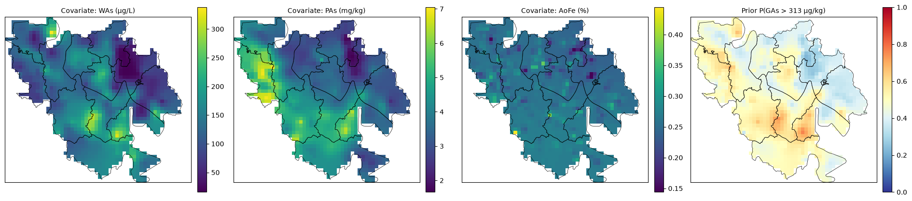
Reading the results. The three slopes are significant. Higher WAs and higher phosphate-extractable soil As shift the distribution of GAs upwards. More poorly crystalline iron oxide shifts it downwards, which is consistent with As retention on iron oxides in the soil.
The model is well calibrated: the mean prior probability at the data matches the observed proportion at each threshold. Its explanatory power is modest. It removes 5% to 14% of the indicator variance, more at the lower thresholds than at the upper ones. The prior map on the right is the spatial pattern that the covariates alone imply.
Variograms of the indicator residuals
The second step treats what the covariates leave unexplained. The residual at a data location is the hard indicator minus the prior probability,
If the residuals are spatially correlated, nearby data can correct the prior. The residual variograms are rescaled by the residual variance.
Code
# Variograms of the grain-arsenic indicator residuals, standardised by the residual variance.emp_g, models_g = [], []for k inrange(K): lag, gamma, n_pairs = experimental_variogram(xy, resid_g[:, k]) g_std = gamma / resid_g[:, k].var() emp_g.append((lag, g_std)) models_g.append(fit_standardized_model(lag, g_std, n_pairs))display(variogram_table(THR_G, models_g).round(3))plot_variograms(emp_g, models_g, THR_G, "µg As/kg", "Variograms of the indicator residuals of grain arsenic")
threshold
cdf
model
nugget
partial_sill
Q
effective_range_m
0
179.4
0.1
spherical
0.904
0.096
0.096
8509.212
1
229.0
0.2
spherical
0.957
0.051
0.051
1850.553
2
261.6
0.3
spherical
0.916
0.131
0.125
1473.571
3
292.0
0.4
exponential
0.281
0.746
0.726
813.731
4
313.0
0.5
spherical
0.669
0.350
0.343
991.712
5
336.6
0.6
spherical
0.837
0.188
0.183
920.749
6
369.0
0.7
spherical
0.502
0.502
0.500
1095.269
7
407.0
0.8
exponential
0.595
0.457
0.434
2572.979
8
470.6
0.9
spherical
0.688
0.409
0.373
753.729
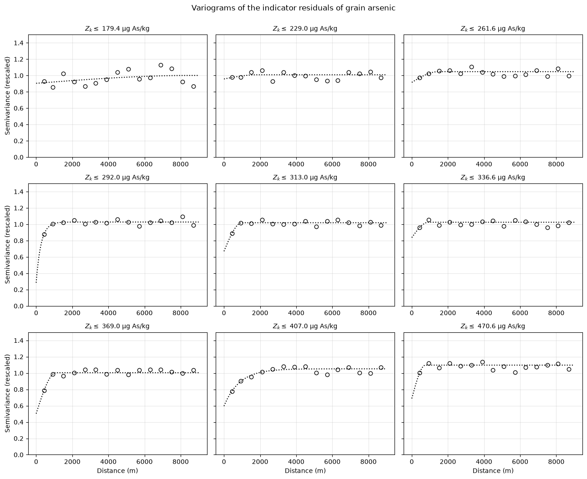
Reading the results. The residuals have little spatial structure left. At most thresholds the nugget is 50% to 96% of the sill, and the effective range is between about 0.75 and 2.6 km. The exceptions are the 0.4 quantile, with a low fitted nugget and a range of 0.8 km, and the 0.1 quantile, where a range of 8.5 km carries only 10% of the variance. Ranges are shorter and sills smaller than for the indicators themselves, because the covariates have absorbed the regional variation.
Two consequences follow. A datum corrects the prior only within about 1 to 2 km. With a sampling density of less than one field per km², many nodes will stay close to their prior.
SIS with local prior means for grain arsenic
At a node \(\mathbf{u}\) the local distribution is the prior from the proportional odds model, corrected by simple kriging of the residuals of the neighbours:
The neighbours are the nearest data and previously simulated nodes. Far from any neighbour the weights go to zero and the node falls back on the prior. The rest of the algorithm is the same as in Section 4.
sklm_cdf and sis_local_means from geolattice.geostatistics apply the estimator at arbitrary points (cross-validation) and embed it in sequential simulation.
Code
# Residual variances and power-tail exponents for GAs, then SIS with local prior means.var_g = resid_g.var(axis=0)p_low_g, p_up_g = tails(gas, THR_G)# Local prior means from the proportional-odds model, updated by kriging the indicator residuals.t0 = time.perf_counter()sim_g = sis_local_means( gxy, prior_g, xy, ind_g, prior_d, THR_G, models_g, var_g,# Simulated grain arsenic stays between the lowest and highest measured values. zmin=float(gas.min()), zmax=float(gas.max()), p_low=p_low_g, p_up=p_up_g, nsim=N_SIM, seed=SEED,)print(f"GAs: {sim_g.shape[0]} realizations x {sim_g.shape[1]} nodes in {(time.perf_counter() - t0) /60:.1f} min")print(f"Simulated range: {sim_g.min():.0f} to {sim_g.max():.0f} µg/kg data range: {gas.min():.0f} to {gas.max():.0f} µg/kg")
GAs: 100 realizations x 1369 nodes in 0.4 min
Simulated range: 95 to 845 µg/kg data range: 94 to 845 µg/kg
Does the secondary information help? Cross-validation for GAs
Three predictors of GAs are compared with the same 10 folds: indicator kriging without covariates, the proportional odds prior alone, and the prior corrected by kriging of the residuals (SKlm). The proportional odds model and the residuals are refitted in each fold. The variogram models are kept fixed.
Code
# Indicator variograms of GAs itself, for the comparison without covariatesmodels_g_ik = []for k inrange(K): lag, gamma, n_pairs = experimental_variogram(xy, ind_g[:, k]) models_g_ik.append(fit_standardized_model(lag, gamma / ind_g[:, k].var(), n_pairs))# Same ten folds as the water cross-validation. The proportional-odds model is refit inside each training fold.cv_ik, cv_prior, cv_sklm = (np.full(len(gas), np.nan) for _ inrange(3))for tr, te in folds: cm = class_means(gas[tr], THR_G) cls_tr = np.searchsorted(THR_G, gas[tr], side="left") v = fit_proportional_odds(X[tr], cls_tr) pr_tr, pr_te = po_cdf(v[:K], v[K:], X[tr]), po_cdf(v[:K], v[K:], X[te])# (a) indicator kriging without covariates: constant prior equal to the global proportions glob = ind_g[tr].mean(axis=0) F = sklm_cdf(xy[te], np.tile(glob, (len(te), 1)), xy[tr], ind_g[tr] - glob, models_g_ik, ind_g[tr].var(axis=0)) cv_ik[te] = etype_from_cdf(F, cm)# (b) proportional odds prior alone cv_prior[te] = etype_from_cdf(order_relations(pr_te), cm)# (c) prior + simple kriging of residuals F = sklm_cdf(xy[te], pr_te, xy[tr], ind_g[tr] - pr_tr, models_g, (ind_g[tr] - pr_tr).var(axis=0)) cv_sklm[te] = etype_from_cdf(F, cm)# Water indicator kriging from the earlier folds, and the three grain predictors on the same folds.cv_tbl = pd.DataFrame([ {"variable": "WAs", "predictor": "Indicator kriging", **cv_w_scores}, {"variable": "GAs", "predictor": "Indicator kriging (no covariates)", **cv_scores(gas, cv_ik)}, {"variable": "GAs", "predictor": "Proportional odds prior only", **cv_scores(gas, cv_prior)}, {"variable": "GAs", "predictor": "Prior + kriged residuals (SKlm)", **cv_scores(gas, cv_sklm)},])display(cv_tbl.round(3))rmse_gain =100* (1- cv_tbl.loc[3, "RMSE"] / cv_tbl.loc[1, "RMSE"])print(f"RMSE improvement of SKlm over indicator kriging for GAs: {rmse_gain:.0f}%")# Measured values against the cross-validated E-type, for water and for the two grain models.fig, axes = plt.subplots(1, 3, figsize=(15, 4.8))for ax, obs, pred, title in [(axes[0], was, cv_w, "WAs: indicator kriging"), (axes[1], gas, cv_ik, "GAs: indicator kriging"), (axes[2], gas, cv_sklm, "GAs: SKlm")]: ax.scatter(obs, pred, s=12, c="0.3", alpha=0.6, linewidths=0) lim = [0, max(obs.max(), pred.max())] ax.plot(lim, lim, "k:") ax.set_xlabel("Observed") ax.set_ylabel("Cross-validated E-type") ax.set_title(f"{title} (R² = {np.corrcoef(obs, pred)[0, 1] **2:.2f})", fontsize=10)plt.tight_layout()plt.show()
variable
predictor
R2
RMSE
bias
0
WAs
Indicator kriging
0.336
64.448
0.166
1
GAs
Indicator kriging (no covariates)
0.053
116.914
-1.623
2
GAs
Proportional odds prior only
0.163
109.662
-1.265
3
GAs
Prior + kriged residuals (SKlm)
0.175
108.884
-2.885
RMSE improvement of SKlm over indicator kriging for GAs: 7%
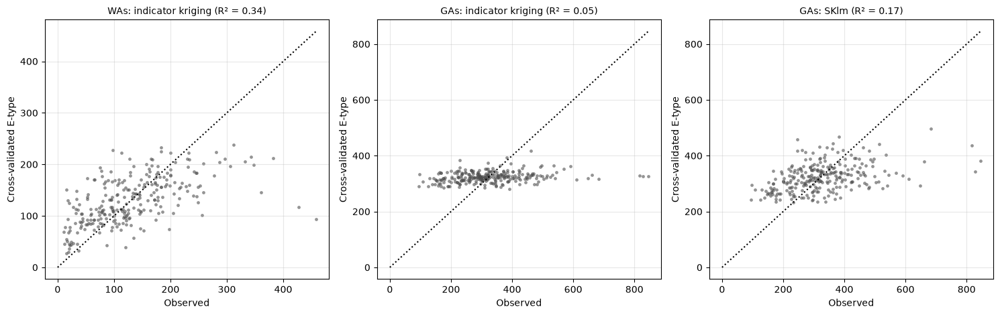
Reading the results.
WAs. Indicator kriging explains a substantial share of the variance of held-out wells.
GAs without covariates. Indicator kriging explains only 5%. Grain As is close to unpredictable from neighbouring fields alone.
GAs with covariates. The proportional odds prior raises R², and kriging the residuals improves it further. RMSE falls relative to indicator kriging alone.
Nearly all of the gain for rice comes from the covariates, not from the spatial correlation of the residuals. The estimates are unbiased, but the scatter plots show the usual smoothing: low values are over-predicted and high values under-predicted. This is the reason to simulate.
Realizations and summary maps
Four randomly selected realizations of each variable are shown first. Each one is a possible reality. The differences between them are the spatial uncertainty.
Code
# Four realizations of each variable. The colour scale stops at the 98th percentile so a few high values do not flatten the maps.pick = np.sort(np.random.default_rng(SEED).choice(N_SIM, size=4, replace=False))W_RANGE = (float(was.min()), float(np.quantile(was, 0.98)))G_RANGE = (float(gas.min()), float(np.quantile(gas, 0.98)))fig, axes = plt.subplots(2, 4, figsize=(19, 9))for j, r inenumerate(pick): plot_grid(axes[0, j], sim_w[r], f"WAs, realization {r +1}", vmin=W_RANGE[0], vmax=W_RANGE[1], label="µg/L") plot_grid(axes[1, j], sim_g[r], f"GAs, realization {r +1}", vmin=G_RANGE[0], vmax=G_RANGE[1], label="µg/kg")plt.tight_layout()plt.show()
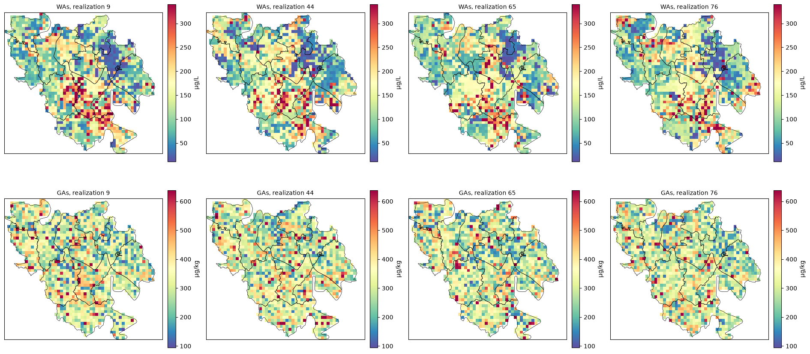
The realizations are summarized node by node: the mean (E-type), the standard deviation, the interquartile range and the 0.1 and 0.9 quantiles. Where the 0.1 quantile is high, arsenic is almost certainly high. Where the 0.9 quantile is low, it is almost certainly low.
Code
# Node-wise mean, standard deviation, interquartile range, and the 10th and 90th percentiles across realizations.def summarize(sims): q10, q25, q75, q90 = np.quantile(sims, [0.10, 0.25, 0.75, 0.90], axis=0)return {"E-type": sims.mean(axis=0), "SD": sims.std(axis=0), "IQR": q75 - q25, "0.1 quantile": q10, "0.9 quantile": q90}sum_w, sum_g = summarize(sim_w), summarize(sim_g)# Concentration maps use the data colour scale. The spread maps start at zero.fig, axes = plt.subplots(5, 2, figsize=(11, 23))for i, key inenumerate(sum_w): level = key in ("E-type", "0.1 quantile", "0.9 quantile") plot_grid(axes[i, 0], sum_w[key], f"WAs: {key}", label="µg/L", vmin=W_RANGE[0] if level else0, vmax=W_RANGE[1] if level elseNone, cmap="Spectral_r"if level else"magma_r") plot_grid(axes[i, 1], sum_g[key], f"GAs: {key}", label="µg/kg", vmin=G_RANGE[0] if level else0, vmax=G_RANGE[1] if level elseNone, cmap="Spectral_r"if level else"magma_r")plt.tight_layout()plt.show()print(f"Correlation between the E-type maps of WAs and GAs: {np.corrcoef(sum_w['E-type'], sum_g['E-type'])[0, 1]:.2f}")print(f"Mean node SD as a share of the data SD: WAs {sum_w['SD'].mean() / was.std():.2f} GAs {sum_g['SD'].mean() / gas.std():.2f}")
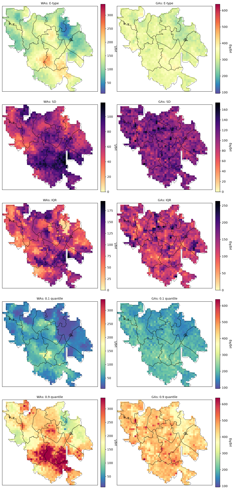
Correlation between the E-type maps of WAs and GAs: 0.63
Mean node SD as a share of the data SD: WAs 0.90 GAs 0.91
Reading the results. The single realizations are noisy, and they should be. Each one reproduces the variability of the data, which a kriged or E-type map smooths away. The E-type maps recover the regional patterns: high WAs in the south-centre and low WAs in the north-east. The 0.1 quantile map shows where WAs is high with confidence, and the 0.9 quantile map shows that the north-east is the only area where WAs is low with confidence.
The uncertainty maps are sobering. The mean standard deviation across realizations is about 90% of the standard deviation of the data for both variables, so the data constrain the value at an unsampled node only weakly. The E-type maps of WAs and GAs are correlated (r = 0.63) because the kriged WAs map is one of the covariates of the GAs prior.
Checking the simulations
A set of realizations is valid if it reproduces the statistics it was built from. Two checks follow: the histogram (through its quantiles) and the variogram. The E-type map is included in the first check to show what kriging-type smoothing does to the distribution.
Code
# Quantiles used to compare the data, the realizations, and the smoothed E-type map.qs = [0.1, 0.25, 0.5, 0.75, 0.9]# For each variable: the sample, the average of the realization distributions, and the E-type map.rows = []for name, data, sims, summ in [("WAs", was, sim_w, sum_w), ("GAs", gas, sim_g, sum_g)]: rq = np.quantile(sims, qs, axis=1) # quantiles of each realization rows.append({"variable": name, "source": "data", "mean": data.mean(), "SD": data.std(), **dict(zip(map(str, qs), np.quantile(data, qs)))}) rows.append({"variable": name, "source": "realizations (average)", "mean": sims.mean(), "SD": sims.std(axis=1).mean(), **dict(zip(map(str, qs), rq.mean(axis=1)))}) rows.append({"variable": name, "source": "E-type map", "mean": summ["E-type"].mean(), "SD": summ["E-type"].std(), **dict(zip(map(str, qs), np.quantile(summ["E-type"], qs)))})display(pd.DataFrame(rows).round(1))# Cumulative distributions. Grey curves are individual realizations and the black curve is the data.fig, axes = plt.subplots(2, 2, figsize=(13, 9.5))rng_v = np.random.default_rng(SEED)for i, (name, data, sims, unit) inenumerate([("WAs", was, sim_w, "µg/L"), ("GAs", gas, sim_g, "µg/kg")]): grid_q = np.linspace(0.01, 0.99, 99)for r inrange(N_SIM): axes[i, 0].plot(np.quantile(sims[r], grid_q), grid_q, color="0.75", lw=0.5) axes[i, 0].plot(np.quantile(data, grid_q), grid_q, "k-", lw=1.8, label="data") axes[i, 0].plot([], [], color="0.75", label="realizations") axes[i, 0].set_xlabel(f"{name} ({unit})"); axes[i, 0].set_ylabel("Cumulative probability") axes[i, 0].set_title(f"{name}: cumulative distribution", fontsize=10); axes[i, 0].legend()# Rescaled variograms check that the realizations reproduce the spatial structure of the data.for r in rng_v.choice(N_SIM, size=min(25, N_SIM), replace=False): lag, gam, _ = experimental_variogram(gxy, sims[r]) axes[i, 1].plot(lag, gam / sims[r].var(), color="0.75", lw=0.6) lag, gam, _ = experimental_variogram(xy, data) axes[i, 1].plot(lag, gam / data.var(), "ko-", ms=4, lw=1.5, label="data") axes[i, 1].plot([], [], color="0.75", label="realizations") axes[i, 1].set_ylim(0, 1.6) axes[i, 1].set_xlabel("Distance (m)"); axes[i, 1].set_ylabel("Semivariance (rescaled)") axes[i, 1].set_title(f"{name}: variogram", fontsize=10); axes[i, 1].legend()plt.tight_layout()plt.show()
variable
source
mean
SD
0.1
0.25
0.5
0.75
0.9
0
WAs
data
129.9
79.1
35.0
74.5
119.0
175.0
231.8
1
WAs
realizations (average)
135.1
82.8
36.2
73.0
125.2
181.0
234.9
2
WAs
E-type map
135.1
38.9
88.1
110.2
132.8
158.9
189.1
3
GAs
data
325.7
119.8
179.4
245.0
313.0
385.0
470.6
4
GAs
realizations (average)
318.7
112.4
182.5
244.2
308.3
375.8
456.2
5
GAs
E-type map
318.7
25.1
286.9
301.7
319.0
334.7
349.9
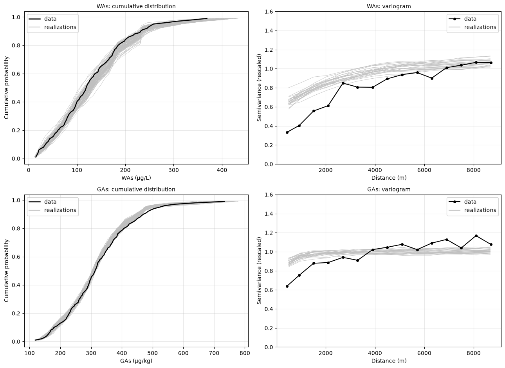
Reading the results.
Histogram. The realizations reproduce the distribution of the data. For WAs the average realization has a mean of 135 and a median of 125 µg/L against 130 and 119 in the data. For GAs the mean is 319 against 326 µg/kg. The E-type maps do not: their standard deviations are 39 µg/L and 25 µg/kg against 79 and 120 in the data. A risk calculation run on the E-type map alone would miss both tails.
Variogram. The realizations match the data variogram at long lags but are too variable at short lags. At the first lag the rescaled semivariance of the WAs realizations is about 0.65 against 0.35 for the data, and for GAs about 0.9 against 0.65. This is a known property of SIS for continuous variables. A value is drawn at random inside its class, so correlation within a class is lost, and the indicator nugget is added at every threshold.
The second point matters for interpretation. Simulated maps are somewhat noisier at short range than reality, which widens the local distributions. More thresholds or a smaller nugget in the indicator models would reduce the effect.
Arsenic intake from water and rice
Daily intake of inorganic As by an adult is
\[
\text{Intake} = \frac{C_{iAs} \times I \times B_{iAs}}{BW} \qquad [\mu\text{g As / kg body weight / day}],
\]
where \(C_{iAs}\) is the inorganic As concentration, \(I\) the daily consumption, \(B_{iAs}\) the bioavailability and \(BW\) the body weight (60 kg).
Water. All As in groundwater is taken as inorganic and fully bioavailable. Water intake follows a log-normal distribution fitted to published surveys, with a median of about 3.3 L/day.
Rice. Inorganic As is predicted from total grain As with the regression \(\text{GAs}_i = 19.6 + 0.67\,\text{GAs}\). Bioavailability is 90%. Rice intake follows a Cauchy distribution centred on 0.46 kg/day. A Cauchy distribution has unbounded tails, so draws are restricted here to the range of the published values, 0.33 to 0.78 kg/day.
The assumptions are that people drink shallow tube-well water, eat locally grown rice and cook it in As-free water. For each node of each realization one consumption value is drawn, so the result describes a randomly chosen adult living at that node.
Intake is compared with 2.1 µg As/kg body weight/day, the former WHO maximum tolerable daily intake (MTDI), and with half of it. The Joint FAO/WHO Expert Committee on Food Additives has withdrawn this value, so it serves here as a reference level, not as a safe limit.
Code
# One consumption draw per realization and node, from the published water and rice intake distributions.rng_mc = np.random.default_rng(SEED +1)water_l = rng_mc.lognormal(WATER_LOGN_MU, WATER_LOGN_SIGMA, size=sim_w.shape)# Cauchy draws restricted to the range of rice intakes in the published study.def truncated_cauchy(rng, loc, scale, low, high, size): cdf =lambda v: 0.5+ np.arctan((v - loc) / scale) / np.pi u = rng.uniform(cdf(low), cdf(high), size=size)return loc + scale * np.tan(np.pi * (u -0.5))rice_kg = truncated_cauchy(rng_mc, RICE_CAUCHY_LOC, RICE_CAUCHY_SCALE, RICE_MIN, RICE_MAX, sim_g.shape)# Intake in µg of arsenic per kg of body weight per day. Grain total arsenic is converted to inorganic arsenic first.intake_w = sim_w * water_l * BIOAVAIL_WATER / BODY_WEIGHTintake_g = (IAS_INTERCEPT + IAS_SLOPE * sim_g) * rice_kg * BIOAVAIL_RICE / BODY_WEIGHTprint(f"Water consumption draws: median {np.median(water_l):.2f} L/day (5th to 95th percentile {np.percentile(water_l, 5):.2f} to {np.percentile(water_l, 95):.2f})")print(f"Rice consumption draws: median {np.median(rice_kg):.2f} kg/day (5th to 95th percentile {np.percentile(rice_kg, 5):.2f} to {np.percentile(rice_kg, 95):.2f})")# The same calculation at the sampled fields with median consumption, 's textobs_w = was * np.exp(WATER_LOGN_MU) * BIOAVAIL_WATER / BODY_WEIGHTobs_g = (IAS_INTERCEPT + IAS_SLOPE * gas) * RICE_CAUCHY_LOC * BIOAVAIL_RICE / BODY_WEIGHTobs_tbl = pd.DataFrame({"median_intake": [np.median(obs_w), np.median(obs_g)],"pct_fields_ge_50pct_MTDI": [100* (obs_w >=0.5* MTDI).mean(), 100* (obs_g >=0.5* MTDI).mean()],"pct_fields_ge_MTDI": [100* (obs_w >= MTDI).mean(), 100* (obs_g >= MTDI).mean()],"pct_fields_ge_2x_MTDI": [100* (obs_w >=2* MTDI).mean(), 100* (obs_g >=2* MTDI).mean()],}, index=["Water", "Rice"])print("\nIntake at the 263 sampled fields with median consumption (µg As/kg body weight/day):")display(obs_tbl.round(1))# Probability, over the realizations, that intake reaches the reference levelsP = {("Water", "MTDI"): (intake_w >= MTDI).mean(axis=0), ("Rice", "MTDI"): (intake_g >= MTDI).mean(axis=0), ("Water", "50% MTDI"): (intake_w >=0.5* MTDI).mean(axis=0), ("Rice", "50% MTDI"): (intake_g >=0.5* MTDI).mean(axis=0)}p_rice_gt_water = (intake_g > intake_w).mean(axis=0)rice_share = np.median(intake_g / (intake_g + intake_w), axis=0)# Maps of those probabilities, including half the reference intake and the share coming from rice.fig, axes = plt.subplots(2, 3, figsize=(17, 10.5))plot_grid(axes[0, 0], P[("Water", "MTDI")], "Water: P(intake >= 2.1 µg/kg/day)", cmap="RdYlBu_r", vmin=0, vmax=1, label="Probability")plot_grid(axes[0, 1], P[("Rice", "MTDI")], "Rice: P(intake >= 2.1 µg/kg/day)", cmap="RdYlBu_r", vmin=0, vmax=1, label="Probability")plot_grid(axes[0, 2], p_rice_gt_water, "P(intake from rice > intake from water)", cmap="PuOr_r", vmin=0, vmax=1, label="Probability")plot_grid(axes[1, 0], P[("Water", "50% MTDI")], "Water: P(intake >= 1.05 µg/kg/day)", cmap="RdYlBu_r", vmin=0, vmax=1, label="Probability")plot_grid(axes[1, 1], P[("Rice", "50% MTDI")], "Rice: P(intake >= 1.05 µg/kg/day)", cmap="RdYlBu_r", vmin=0, vmax=1, label="Probability")plot_grid(axes[1, 2], 100* rice_share, "Median share of rice in total intake", cmap="YlGn", vmin=0, vmax=100, label="%")plt.tight_layout()plt.show()print(f"Median intake over all nodes and realizations: water {np.median(intake_w):.2f} rice {np.median(intake_g):.2f} µg As/kg body weight/day")print(f"Area where rice is more likely than water to be the larger source: {100* (p_rice_gt_water >0.5).mean():.1f}%")
Water consumption draws: median 3.30 L/day (5th to 95th percentile 2.34 to 4.65)
Rice consumption draws: median 0.46 kg/day (5th to 95th percentile 0.38 to 0.59)
Intake at the 263 sampled fields with median consumption (µg As/kg body weight/day):
median_intake
pct_fields_ge_50pct_MTDI
pct_fields_ge_MTDI
pct_fields_ge_2x_MTDI
Water
6.5
95.8
88.2
73.8
Rice
1.6
87.5
16.7
0.0
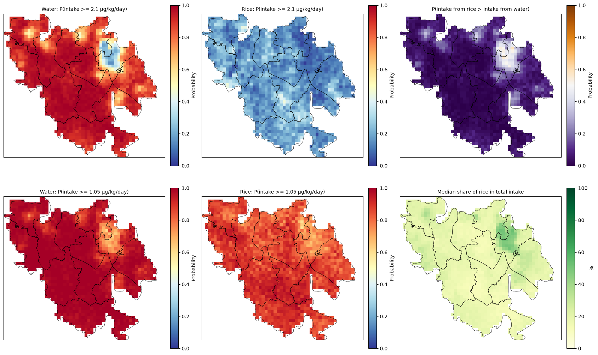
Median intake over all nodes and realizations: water 6.75 rice 1.58 µg As/kg body weight/day
Area where rice is more likely than water to be the larger source: 0.7%
Area and population at risk
The tables below give the share of the area in each class of \(P(\text{intake} \ge \text{MTDI})\), and the share of the population living where that probability is at least 0.1, 0.2, up to 0.9. The population of each union is spread evenly over its nodes.
Code
# Share of the grid in each 10-point bin of the probability that intake reaches the reference value.PROB_BINS = np.linspace(0, 1, 11)PROB_LABELS = ["< 10", "10-20", "20-30", "30-40", "40-50", "50-60", "60-70", "70-80", "80-90", "> 90"]area_tbl = pd.DataFrame({"probability_pct": PROB_LABELS})for medium in ["Water", "Rice"]: cls = np.clip(np.digitize(P[(medium, "MTDI")], PROB_BINS[1:-1]), 0, 9) area_tbl[f"{medium}_area_pct"] = [100* np.mean(cls == k) for k inrange(10)]display(area_tbl.round(1))# Population weight of each noden_nodes = grid.groupby("Union")["x"].transform("size").to_numpy()pop_by_union = unions.set_index("Union")["Population"]node_pop = pop_by_union.reindex(grid["Union"]).to_numpy() / n_nodeslevels = np.round(np.arange(0.1, 1.0, 0.1), 1)# Percent of the population at nodes where that probability is at least 0.1, 0.2, and so on up to 0.9.def population_share(prob):return np.array([100* node_pop[prob >= p].sum() / node_pop.sum() for p in levels])# Rice against water, at the reference intake and at half of it.fig, axes = plt.subplots(1, 2, figsize=(14, 4.8), sharey=True)width =0.38for ax, ref, lab inzip(axes, ["MTDI", "50% MTDI"], ["2.1", "1.05"]): ax.bar(np.arange(9) - width /2, population_share(P[("Rice", ref)]), width, color="#4f81bd", label="Rice") ax.bar(np.arange(9) + width /2, population_share(P[("Water", ref)]), width, color="#c0504d", label="Water") ax.set_xticks(np.arange(9)) ax.set_xticklabels([f">= {p:.1f}"for p in levels]) ax.set_xlabel("Probability") ax.set_title(f"Probability that As intake >= {lab} µg/kg body weight/day", fontsize=10) ax.set_ylim(0, 110)axes[0].set_ylabel("Percent of population")axes[0].legend()plt.tight_layout()plt.show()pop_tbl = pd.DataFrame({"probability_at_least": levels,"water_MTDI": population_share(P[("Water", "MTDI")]),"rice_MTDI": population_share(P[("Rice", "MTDI")]),"water_50pct_MTDI": population_share(P[("Water", "50% MTDI")]),"rice_50pct_MTDI": population_share(P[("Rice", "50% MTDI")]),})display(pop_tbl.round(1))
probability_pct
Water_area_pct
Rice_area_pct
0
< 10
0.0
12.3
1
10-20
0.4
53.1
2
20-30
1.6
29.3
3
30-40
0.8
4.7
4
40-50
1.2
0.5
5
50-60
2.1
0.0
6
60-70
3.6
0.0
7
70-80
4.7
0.0
8
80-90
18.2
0.0
9
> 90
67.5
0.0
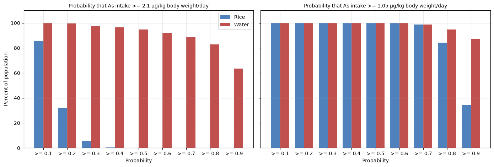
probability_at_least
water_MTDI
rice_MTDI
water_50pct_MTDI
rice_50pct_MTDI
0
0.1
100.0
85.7
100.0
100.0
1
0.2
99.5
32.3
100.0
100.0
2
0.3
97.5
5.9
100.0
100.0
3
0.4
96.3
0.4
100.0
100.0
4
0.5
94.7
0.0
100.0
100.0
5
0.6
92.3
0.0
100.0
99.8
6
0.7
88.4
0.0
98.7
98.7
7
0.8
82.7
0.0
94.6
84.1
8
0.9
63.6
0.0
87.4
34.2
Reading the results.
Water dominates. At the sampled fields with median consumption, intake from water has a median of 6.5 µg As/kg body weight/day, about three times the MTDI. It reaches the MTDI at 88% of the wells and twice the MTDI at 74%. Rice gives a median of 1.6 µg/kg/day and reaches the MTDI at 17% of the fields, but it reaches half of the MTDI at 88%.
Maps. The probability that water intake reaches the MTDI is above 0.9 on 68% of the area. For rice it stays below 0.4 on more than 99% of the area. Half of the MTDI is reached from rice alone with a probability of at least 0.5 almost everywhere.
Population. About 95% of the population lives where water intake is more likely than not to reach the MTDI, and 64% where this is at least 90% probable. For rice the corresponding figures are zero at the MTDI, and 100% and 34% at half of the MTDI.
Where rice matters most. Rice is more likely than water to be the larger source on less than 1% of the area, all of it in the low-WAs zone of Tala union, where rice supplies up to about half of the total intake.
Exceeding the MTDI from rice alone is unlikely everywhere. The exact share of area in the lowest probability class depends on choices made here: a consumption value is drawn for every node and realization, and residual models with a larger nugget leave wider local distributions.
with exposure duration \(ED\) = 28 years, exposure frequency \(EF\) = 350 days per year, averaging time \(AT_c\) = 70 years (25,550 days) and a cancer potency slope \(CPS\) of 1.5 per mg/kg body weight/day for ingested inorganic arsenic. The factor \(10^{-3}\) converts µg to mg. A risk of \(10^{-4}\), one additional case per 10,000 people, is taken as the acceptable level.
The median of the realizations at each node is the central estimate and the 95th percentile is the reasonable maximum estimate.
Code
# Lifetime risk per unit intake: duration, frequency, and potency, divided by the averaging time, with µg converted to mg.RISK_FACTOR = ED * EF * CPS / AT *1.0e-3risk_w = intake_w * RISK_FACTORrisk_g = intake_g * RISK_FACTORPER =1.0e4# express risk per 10,000 people# Median and 95th percentile at each node, expressed as cases per 10,000 people.r50_w, r95_w = np.quantile(risk_w, [0.5, 0.95], axis=0) * PERr50_g, r95_g = np.quantile(risk_g, [0.5, 0.95], axis=0) * PER# Median and upper-tail maps. Each source uses one colour stretch so the two panels can be compared.fig, axes = plt.subplots(2, 2, figsize=(12, 10.5))plot_grid(axes[0, 0], r50_w, "Water: median risk", cmap="YlOrRd", vmin=0, vmax=np.percentile(r95_w, 99), label="Cases per 10,000")plot_grid(axes[0, 1], r95_w, "Water: 95th percentile risk", cmap="YlOrRd", vmin=0, vmax=np.percentile(r95_w, 99), label="Cases per 10,000")plot_grid(axes[1, 0], r50_g, "Rice: median risk", cmap="YlOrRd", vmin=0, vmax=np.percentile(r95_g, 99), label="Cases per 10,000")plot_grid(axes[1, 1], r95_g, "Rice: 95th percentile risk", cmap="YlOrRd", vmin=0, vmax=np.percentile(r95_g, 99), label="Cases per 10,000")plt.tight_layout()plt.show()print(f"Risk factor ED x EF x CPS / AT x 1e-3 = {RISK_FACTOR:.3e} per µg As/kg body weight/day")print(f"Median risk over all nodes and realizations: water {np.median(risk_w):.2e} rice {np.median(risk_g):.2e}")print(f"Share of nodes with median risk above 1e-4: water {100* (r50_w >1).mean():.0f}% rice {100* (r50_g >1).mean():.0f}%")
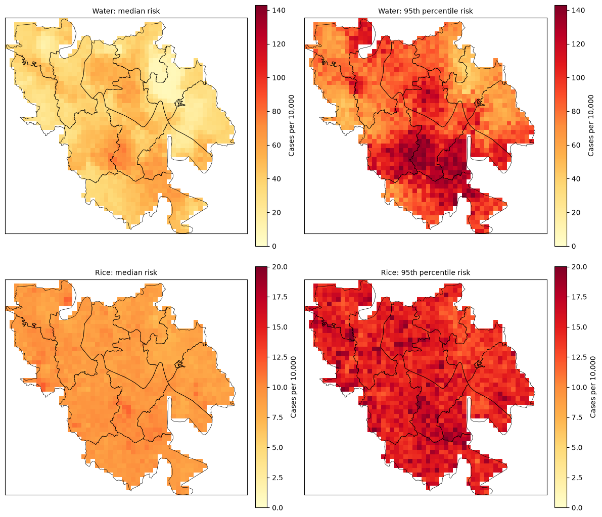
Risk factor ED x EF x CPS / AT x 1e-3 = 5.753e-04 per µg As/kg body weight/day
Median risk over all nodes and realizations: water 3.89e-03 rice 9.06e-04
Share of nodes with median risk above 1e-4: water 100% rice 100%
Code
# Lifetime cancer risk summarised by union (UID / Union from tala_union.shp).node_risk = pd.DataFrame({"Union": grid["Union"],"water_median": r50_w,"rice_median": r50_g,"water_p95": r95_w,"rice_p95": r95_g,})# Mean and standard deviation of the node risks inside each union.agg = node_risk.groupby("Union").agg(["mean", "std"])union_tbl = pd.DataFrame({"Union": agg.index})for c in ["water_median", "rice_median", "water_p95", "rice_p95"]: union_tbl[c] = agg[(c, "mean")].to_numpy() union_tbl[c +"_sd"] = agg[(c, "std")].to_numpy()union_tbl = union_tbl.merge(unions[["Union", "UID", "Population"]], on="Union")union_tbl["ratio_water_to_rice"] = union_tbl["water_median"] / union_tbl["rice_median"]# Table of mean and standard deviation, with population from the union file.show = pd.DataFrame({"Union": union_tbl["Union"], "Population": union_tbl["Population"]})for c, lab in [ ("water_median", "Water, median"), ("rice_median", "Rice, median"), ("water_p95", "Water, 95th pct"), ("rice_p95", "Rice, 95th pct"),]: show[lab] = [f"{m:.1f} ± {s:.1f}"for m, s inzip(union_tbl[c], union_tbl[c +"_sd"])]print("Lifetime cancer risk per 10,000 people, mean ± SD over the nodes of each union")display(show)# Unions ordered by median water risk. The dotted line is one case per 10,000.fig, axes = plt.subplots(1, 2, figsize=(14, 5))order = union_tbl.sort_values("water_median")yy = np.arange(len(order))axes[0].barh(yy -0.2, order["water_median"], 0.4, color="#c0504d", label="Water")axes[0].barh(yy +0.2, order["rice_median"], 0.4, color="#4f81bd", label="Rice")axes[0].set_yticks(yy)axes[0].set_yticklabels(order["Union"])axes[0].axvline(1.0, color="k", ls=":", label="acceptable risk (1 per 10,000)")axes[0].set_xlabel("Median lifetime cancer risk (cases per 10,000)")axes[0].set_title("Median risk by union", fontsize=10)axes[0].legend(fontsize=8)# Distribution of risk over every node and realization, on a log scale.for risk, colr, lab in [(risk_w, "#c0504d", "Water"), (risk_g, "#4f81bd", "Rice")]: v = np.sort(rng_mc.choice(risk.ravel(), size=min(risk.size, 50000), replace=False)) axes[1].plot(v, np.linspace(0, 1, len(v)), color=colr, label=lab)axes[1].axvline(RISK_ACCEPTABLE, color="k", ls=":", label="acceptable risk (1e-4)")axes[1].set_xscale("log")axes[1].set_xlabel("Lifetime cancer risk")axes[1].set_ylabel("Cumulative probability")axes[1].set_title("Distribution of risk over all nodes and realizations", fontsize=10)axes[1].legend(fontsize=8)plt.tight_layout()plt.show()# Expected cases: population at each node times the mean lifetime risk at that node.expected_cases = pd.Series({"Water": (node_pop * risk_w.mean(axis=0)).sum(),"Rice": (node_pop * risk_g.mean(axis=0)).sum(),})print("Expected additional lifetime cancer cases in the population of the union file:")print(expected_cases.round(0).to_string())
Lifetime cancer risk per 10,000 people, mean ± SD over the nodes of each union
Union
Population
Water, median
Rice, median
Water, 95th pct
Rice, 95th pct
0
Dhandia
14968
35.2 ± 8.8
9.2 ± 0.7
81.8 ± 18.0
15.2 ± 1.8
1
Islamkati
15063
48.9 ± 9.4
8.9 ± 0.4
99.9 ± 14.1
15.0 ± 1.6
2
Jalalpur
18365
46.0 ± 15.1
9.3 ± 0.7
111.3 ± 19.6
15.1 ± 2.1
3
Khalilnagar
21767
30.0 ± 8.5
8.7 ± 0.6
75.3 ± 15.5
14.4 ± 1.3
4
Khalishkhali
21256
46.4 ± 10.7
9.3 ± 0.5
100.8 ± 22.7
15.3 ± 1.5
5
Khesra
20705
46.3 ± 9.4
9.3 ± 0.5
101.3 ± 19.4
15.5 ± 1.6
6
Kumira
15825
44.7 ± 10.9
8.9 ± 0.5
86.6 ± 7.4
15.4 ± 1.8
7
Magura
15834
51.5 ± 11.9
9.6 ± 0.7
111.2 ± 21.9
15.9 ± 1.7
8
Nagarghata
13076
32.2 ± 6.5
9.5 ± 0.7
66.9 ± 14.5
15.5 ± 1.9
9
Sarulia
25237
37.5 ± 5.8
9.0 ± 0.5
82.2 ± 14.3
14.8 ± 1.5
10
Tala
21686
20.5 ± 12.0
8.3 ± 0.5
63.2 ± 16.9
13.6 ± 1.3
11
Tentulia
17437
32.8 ± 13.1
8.6 ± 0.6
71.6 ± 14.6
14.1 ± 1.5
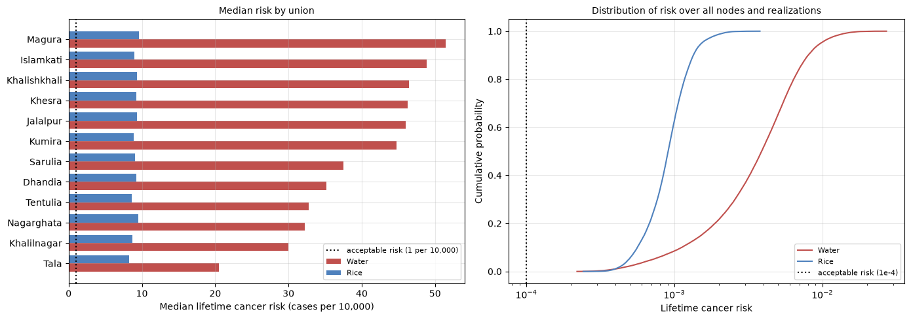
Expected additional lifetime cancer cases in the population of the union file:
Water 946.0
Rice 208.0
Reading the results.
Level of risk. The median lifetime cancer risk is 3.9 x 10⁻³ from water and 9.1 x 10⁻⁴ from rice, or about 39 and 9 additional cases per 10,000 people. The.6 x 10⁻⁴ for rice. Both media exceed the 10⁻⁴ level at every node, rice by a factor of about nine.
Unions. Median water risk ranges from 21 per 10,000 in Tala to 51 in Magura. Rice risk is nearly uniform, between 8.3 and 9.6 per 10,000. Water therefore drives the differences between unions, and rice adds a floor of risk that would remain even where safe drinking water is supplied.
Scale. With the stated assumptions, the expected number of additional lifetime cancer cases among the 221,219 people in the union file is about 950 from water and 210 from rice.
Comparison with the. The union values agree with the draft Table 2 only when its rows are matched to the polygons by the UID field of tala_union.shp. On that key the correlation of the water medians is 1.00 (0.96 for the rice medians and for the 95th percentile of water). Matched on the union names printed in the draft, the correlation is -0.61. The draft table appears to list the values in UID order beside names in alphabetical order, so its row labels should be checked before publication. For example, the lowest water risk in the draft (18.6) is printed beside Khalishkhali but belongs to the polygon of Tala union, which is also the lowest here (20.5).
After matching, the rice values are within about 5% of the draft. The water medians here are lower than the draft in most unions, by 10% to 20% where risk is high. The lower number of realizations, the coarser grid and the single-structure variogram models are possible reasons.
Summary of results
Code
# Sample, cross-validation, intake area, and lifetime risk, collected for the closing table.summary_tbl = pd.DataFrame([ ("Fields with paired water and grain samples", f"{len(df)}"), ("Realizations and simulation grid", f"{N_SIM} at {GRID_STEP} m ({len(grid):,} nodes)"), ("WAs: median and maximum (µg/L)", f"{np.median(was):.0f} and {was.max():.0f}"), ("GAs: median and maximum (µg/kg)", f"{np.median(gas):.0f} and {gas.max():.0f}"),# Cross-validated fit, then area and population above the intake thresholds. ("Cross-validated R², WAs indicator kriging", f"{cv_w_scores['R2']:.2f}"), ("Cross-validated R², GAs indicator kriging and SKlm", f"{cv_tbl.loc[1, 'R2']:.2f} and {cv_tbl.loc[3, 'R2']:.2f}"), ("Area with P(water intake >= MTDI) > 0.9", f"{area_tbl['Water_area_pct'].iloc[-1]:.0f}%"), ("Area with P(rice intake >= MTDI) < 0.1", f"{area_tbl['Rice_area_pct'].iloc[0]:.0f}%"), ("Population where P(rice intake >= 50% MTDI) >= 0.5", f"{pop_tbl['rice_50pct_MTDI'].iloc[4]:.0f}%"),# Lifetime risk, and the unions at the high and low ends of the water-risk range. ("Median lifetime cancer risk, water", f"{np.median(risk_w):.2e}"), ("Median lifetime cancer risk, rice", f"{np.median(risk_g):.2e}"), ("Union with the highest median water risk", f"{union_tbl.loc[union_tbl['water_median'].idxmax(), 'Union']} ({union_tbl['water_median'].max():.0f} per 10,000)"), ("Union with the lowest median water risk", f"{union_tbl.loc[union_tbl['water_median'].idxmin(), 'Union']} ({union_tbl['water_median'].min():.0f} per 10,000)"),], columns=["Result", "Value"])display(summary_tbl)
Result
Value
0
Fields with paired water and grain samples
263
1
Realizations and simulation grid
100 at 500 m (1,369 nodes)
2
WAs: median and maximum (µg/L)
119 and 458
3
GAs: median and maximum (µg/kg)
313 and 845
4
Cross-validated R², WAs indicator kriging
0.34
5
Cross-validated R², GAs indicator kriging and SKlm
0.05 and 0.17
6
Area with P(water intake >= MTDI) > 0.9
67%
7
Area with P(rice intake >= MTDI) < 0.1
12%
8
Population where P(rice intake >= 50% MTDI) >= 0.5
100%
9
Median lifetime cancer risk, water
3.89e-03
10
Median lifetime cancer risk, rice
9.06e-04
11
Union with the highest median water risk
Magura (51 per 10,000)
12
Union with the lowest median water risk
Tala (21 per 10,000)
Conclusions and limitations
What the analysis shows
Groundwater As is high almost everywhere in Tala Upazila. Drinking shallow tube-well water gives a median intake of about three times the former tolerable daily intake, and about 95% of the population lives where exceeding it is more likely than not.
Rice alone rarely reaches the tolerable intake, but it reaches half of it almost everywhere. Its lifetime cancer risk of about 9 per 10,000 is nearly the same in every union and is about nine times the acceptable level.
Spatial prediction is much weaker for rice grain than for water. Covariates (WAs, phosphate-extractable soil As, oxalate-extractable Fe) raise the cross-validated R² for GAs from 0.05 to 0.17. Spatial correlation of the residuals adds very little.
Simulation, not kriging, is the right tool for the risk calculation. The realizations reproduce the histogram of the data, while the E-type map loses more than half of the standard deviation.
Mitigation of drinking water has the largest effect on risk. Where safe water is supplied, rice becomes the main remaining source.
Limitations
The notebook uses 100 realizations on a 500 m grid. The 95th percentiles are the least stable results.
Each indicator variogram has a nugget and one structure.
SIS realizations are too variable at short lags (Section 9).
The GAs prior uses one kriged map of WAs, so the uncertainty of WAs is not carried into the rice simulation. WAs and GAs are simulated independently.
The wells sampled are irrigation wells. Using them for drinking-water exposure assumes that domestic wells nearby draw the same water.
The intake model takes one adult body weight, cooking in As-free water and locally grown rice all year. The bioavailability of As from rice is uncertain.
The MTDI of 2.1 µg/kg body weight/day has been withdrawn, and the cancer risk model is linear with a single potency slope.
Population is spread evenly within each union.
Exercises
Raise N_SIM to 1000 and GRID_STEP to 100, the settings of the. Which results change, and by how much do the 95th percentile risks move?
Simulate GAs with sisim and no secondary information. Compare the SD maps and the union risk table with the local-prior-means result.
The prior for GAs uses the supplied kriged map of WAs. Replace it with the WAs realizations, one per GAs realization, so that the uncertainty of WAs is carried into the prior. Does the SD of GAs increase?
Replace the truncated Cauchy distribution of rice intake with a log-normal distribution of the same median and a coefficient of variation of 18%. How sensitive is the 95th percentile of rice risk?
Repeat Section 11 for the combined intake from water and rice, pairing realizations at random. Where is the combined median risk highest?
Use sicosim (Markov-Bayes collocated indicator cosimulation) with the prior probabilities as soft data and compare its realizations with those of sis_local_means.
References
Ahmed, Z. U., Panaullah, G. M., DeGloria, S. D. and Duxbury, J. M. (2011). Factors affecting paddy soil arsenic concentration in Bangladesh: prediction and uncertainty of geostatistical risk mapping. Science of the Total Environment, 412-413, 324-335.
Deutsch, C. V. and Journel, A. G. (1998). GSLIB: Geostatistical Software Library and User’s Guide, 2nd ed. Oxford University Press.
Goovaerts, P. (1997). Geostatistics for Natural Resources Evaluation. Oxford University Press.
Grunwald, S., Goovaerts, P., Bliss, C. M., Comerford, N. B. and Lamsal, S. (2006). Incorporation of auxiliary information in the geostatistical simulation of soil nitrate nitrogen. Vadose Zone Journal, 5, 391-404.
US EPA (2001). Risk Assessment Guidance for Superfund: Volume III, Part A, Process for Conducting Probabilistic Risk Assessment. EPA 540-R-02-002.